En este tema aprenderemos a utilizar los interruptores o switches en nuestros eventos.
Dicho elemento nos permite asignar comportamientos a los eventos para que dependan de ciertas condiciones.
Vamos a ver a los switches como interruptores y como tales solo tienen dos posiciones (encendido o apagado).
Aplicando este principio a la programación, los interruptores son como cajas pero que solo pueden almacenar
valores true o false y el contenido puede variar dependiendo de nuestras necesidades.
Pero, ¿cómo podemos usar esto en RPG Maker?
Pues, aquí algunas ideas:
• Saber si un jefe ha sido derrotado.
• Evitar que el jugador acceda a un área determinada sin una llave.
Veamos un ejemplo de cómo funcionan los interruptores, creando un evento donde tengamos que darle
a un botón para abrir la verja que proteje la puerta de nuestro mapa.
Para ello iremos al menú de eventos pinchando en la opción de la barra de herramientas o presionando F6. A
continuación daremos click derecho en la zona del mapa donde colocaremos el botón que abrirá la puerta, se
desplegará el menú de creación de eventos.
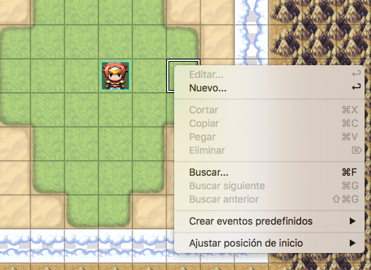
Las opciones de este menú, además de las que ya hemos visto de creación de eventos predefinidos, son:
• Nuevo...: Esto permite colocar un nuevo evento en el mapa. Usaremos esto con
frecuencia a lo largo de este curso.
• Las herramientas de edición: (Editar / Cortar / Copiar / Pegar / Eliminar / Buscar)
están atenuadas porque no hay ningún evento en el cuadrado seleccionado.
• Ajustar posición de inicio: Te permite establecer la posición inicial para el
personaje del jugador y tres tipos de vehículos (bote, barco, aeronave). Establecer una posición
inicial para el personaje del jugador es obligatorio, pero las ubicaciones de los vehículos iniciales
son opcionales.
Pulsaremos en la opción de crear un nuevo evento.
Dentro de la ventana del asistente de eventos tenemos las siguientes opciones:
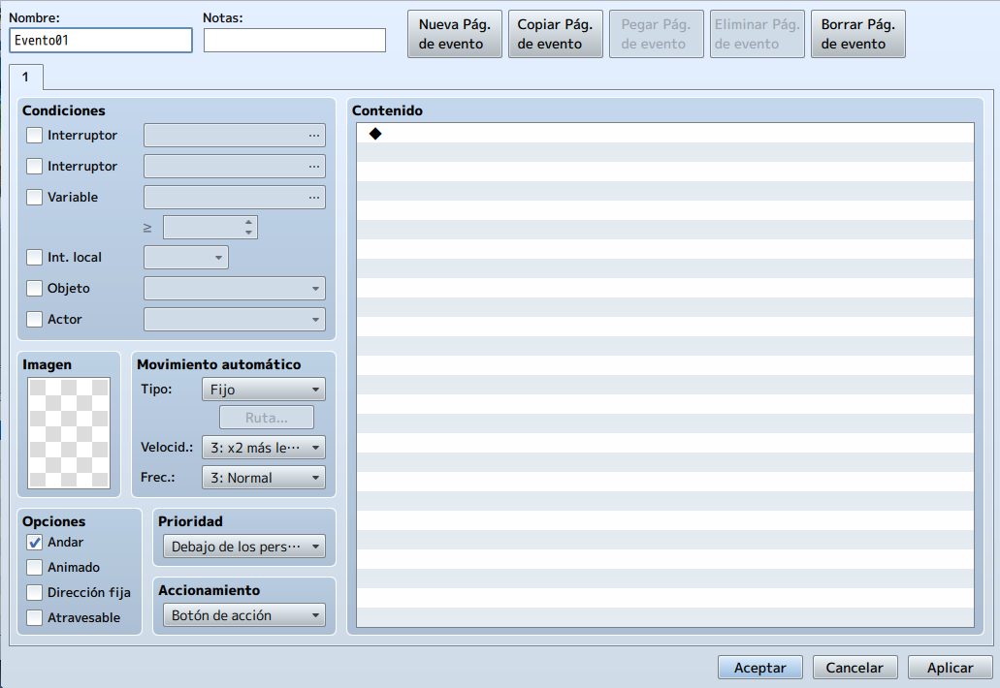
Hay muchos aspectos en la pantalla de nuevo evento, así que vamos a desglosarlos.
• Lo primero que vemos es el nombre del evento. Es recomendable darle al evento un nombre que lo
identifique. Esto nos servirá para después poder hacer búsquedas sobre estos eventos
• En la parte superior izquierda tenemos las Condiciones para el evento. Si no has
activado ninguna, el evento en cuestión siempre estará activo.
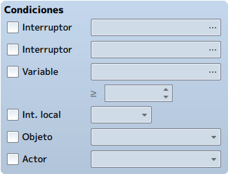
• Debajo de la anterior tenemos la selección de Imagen, donde podemos elegir un tileset que se mostrara en el mapa, ya sea un enemigo o un NPC.
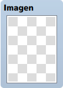
• En la parte inferior tenemos la lista de Opciones:
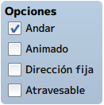
- Andar: Detecta si el jugador cambia de posición. De ser así, el NPC girará con
él.
- Animado: Cuando está marcada, el NPC se moverá. Esta opción debe utilizarse si
se quieren emular gestos.
- Dirección Fija: Cuando está activada, el NPC permanecerá en su sitio apuntando
siempre a la misma dirección.
- Atravesable: Cuando está activada, el jugador sera capaz de pasar a través del
NPC.
• En la parte derecha de las opciones de imagen, tenemos las opciones de Movimiento
Automático, que se divide en tres funciones:
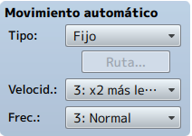
- Tipo: Define el tipo de movimiento que usa el evento. Tenemos cuatro tipos de
movimiento:
◦ Fijo: El evento permanece en el sitio inicial sin moverse. Podemos
usarlo, por ejemplo, para eventos que queramos que se mantengan en su sitio, como un cofre
o una puerta.
◦ Aleatorio: El evento se mueve en direcciones aleatorias.
◦ Enfocado: Un evento con este tipo de movimiento intentará acercarse al
jugador por su cuenta.
◦ Personalizado: El evento se movera a la posicion donde hagamos click.
Esto también hace que el evento se mueva de regreso a la posición inicial.
- Velocid.: Define que tan rápido se mueve el evento dependiendo del patrón
establecido.
- Freq.: Define la frecuencia en la que se ejecuta el patrón de movimiento
definido.
• Debajo tenemos Prioridad. Esta opción define la capa gráfica en la que se encuentra
el evento:
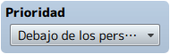
- Debajo de los Personajes: El evento se encuentra debajo del jugador. Esta
característica se usa cuando el evento es un botón del suelo por ejemplo.
- Igual que los Personajes: El evento se encuentra a la misma altura que el
jugador.
- Encima de los Personajes: El evento se encuentra sobre la cabeza del jugador.
Esta característica se usa en candelabros por ejemplo.
• Debajo de la anterior tenemos Accionamiento, que define qué acción desencadenará el
evento:
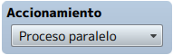
- Botón de Acción: Define que un evento se activará cuando se presione el botón
de acción (tecla espacio o tecla intro).
- Toque del Jugador: Se activa cuando el jugador pasa encima del evento. Está
relacionado con la prioriadad Debajo de los Personajes.
- Toque del Evento: Se activa cuando el propio evento toca al jugador. Por
ejemplo podrías usarlo cuando quieres crear proyectiles que el jugador debe esquivar.
Nota: Una forma fácil de determinar si necesitas Toque del Jugador o Toque del Evento es la siguiente:
- Para algo que quieras que el jugador active a su conveniencia, usa Toque del Jugador.
- Para algo que el jugador debe evitar o que se activa fuera de su control, usa Toque del Evento.
- Proceso Automático: Esto define que el evento siempre esta en ejecución y
repetirá sus acciones hasta que algo lo detenga. Probablemente este disparador sea la forma
mas fácil de crashear tu juego cuando lo ejecutes. En general solo se usa para crear cinemáticas.
- Proceso Paralelo: Al igual que Proceso Automático, siempre
esta activo, pero se ejecuta de manera paralela al juego, por lo que no interrumpe el flujo
normal del mismo.
• A la derecha, tenemos el Contenido del evento. Aquí se irán pasando todas las
opciones seleccionadas a un lenguaje de programación, en este caso JavaScript.
Si hacemos click con el botón izquierdo en Nuevo o haciendo doble clic con el botón derecho en
cualquier lugar dentro de los límites de la ventana, verás una larga lista de comandos de eventos.
Representan las muchas cosas que podemos hacer con RMMV sin tener ni idea de conocimientos de
programación.
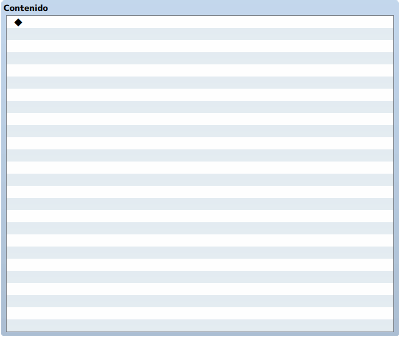
• En la parte superior de la página, verás cinco botones relacionados con la creación y eliminación de páginas de eventos. Un solo evento puede tener hasta 99 páginas.
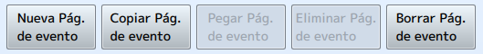
Una vez comprendida la página de eventos, ya podemos continuar con nuestro proyecto. Para ello debemos tener
claro los siguientes puntos:
• Queremos un botón que el personaje pueda pulsar.
• No queremos que la puerta de entrada sea revelada, hasta que se haya pulsado dicho botón.
• Queremos que el botón refleje el hecho de que ha sido pulsado.
El evento del botón tendrá dos páginas y el evento de salida es una página. Primero pensemos en la situación.
Nuestro jugador inicia el juego y no ve nada importante, un solo botón. Queremos que el jugador presione el
botón y reciba algún tipo de retroalimentación después del hecho, para que sepa que lo hizo.
Entonces, la página 1 del evento del botón tendrá un gráfico del botón en una posición elevada, mientras que
la página 2 de ese evento tendrá un gráfico del mismo botón en una posición baja. Le informaremos al jugador
a través de un cuadro de texto que se ha presionado el botón, antes de hacerlo.
¿Cómo conseguimos todo eso? Pues, con un switch. Para crear todo esto configuraremos un botón tal como se
muestra en la imagen.
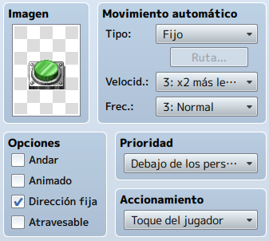
Podemos añadir al evento un texto, que se mostrará cuando activemos el botón (cuando lo pisemos). Para ello haremos click con el botón izquierdo en contenido y pincharemos en nuevo.

Aquí podemos ver una larga lista de comandos de eventos con el nombre apropiado. Hay tres páginas llenas de
comandos útiles para sus necesidades de eventos.
Seleccionaremos el comando Mostrar mensaje... y añadiremos el texto
¡Pisaste el botón!
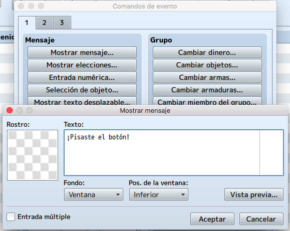
• Rostro: Puede agregar un retrato de personaje al cuadro de texto. Tenga en cuenta
que al hacerlo se reduce la cantidad de texto que puede caber en cada línea.
• Texto: En el recuadro de la nota se ve una línea casi transparente. Esta línea gris
marca la cantidad de texto que se podrá leer en el juego. Si agrega un retrato de personaje, la línea
se desplaza hacia la izquierda, ya que el retrato ocupa espacio que de otro modo estaría disponible
para texto. Un cuadro de texto puede contener hasta cuatro líneas de texto.
• Entrada múltiple: Se puede alternar para permitirle escribir más de cuatro líneas
de texto. Se crearán automáticamente comandos adicionales de Mostrar texto después de cada cuarta
línea de texto que tenga.
• Fondo: Afecta a la apariencia del cuadro de texto en sí. El valor predeterminado
es Ventana, que mostrará el cuadro de texto en el color establecido dentro de RMMV. El valor
predeterminado es -34 rojo / 0 verde / 68 azul y se puede cambiar con el uso del comando de evento
ChangeWindowColor. También puede configurar el cuadro de texto en Atenuado y Transparente.
Transparente puede ser bastante útil si tiene una escena en la que ha oscurecido la pantalla y solo
desea mostrar el texto, sin el cuadro de texto adjunto.
• Posición de la ventana: Puede establecer la posición del cuadro de texto en la
pantalla cuando se muestra. Su valor predeterminado es Inferior y también se puede establecer en Medio
o Superior.
También podemos añadir al evento un efecto de sonido, que se reproducirá también al activar el botón. Para
ello añadiremos otro contenido. En este caso Reproducir SE de la segunda pestaña y
seleccionaremos el efecto Jump1.
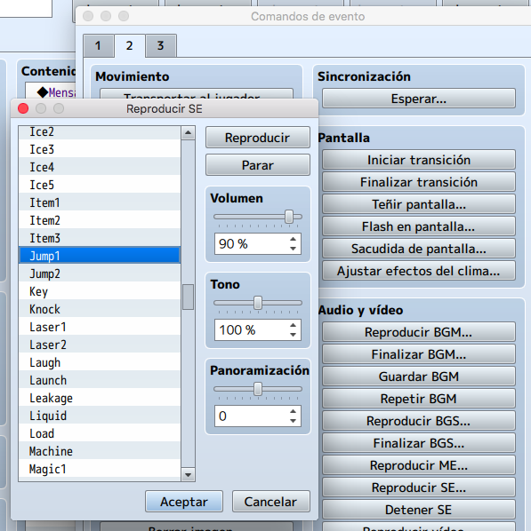
Ahora activaremos un interruptor local para pasar de esta página del evento a otra que crearemos más adelante con el botón pulsado. Activaremos el interruptor "A".
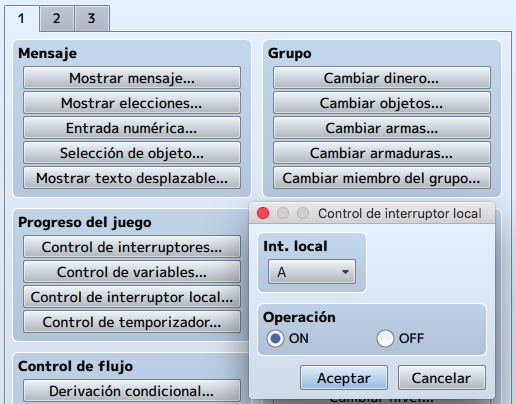
Por último, activaremos un interruptor global que será el que nos permita abrir la puerta. En este caso será
el "0001". Le pondremos un nombre en concreto, en este caso Puerta Mapa 1.
El comando es bastante simple. Se elige un solo interruptor o un lote de interruptores para activar, y luego
decide si desea activarlos o desactivarlos. Puede hacer clic en el botón etiquetado como "..." para cambiar
el nombre interruptor que está afectando.
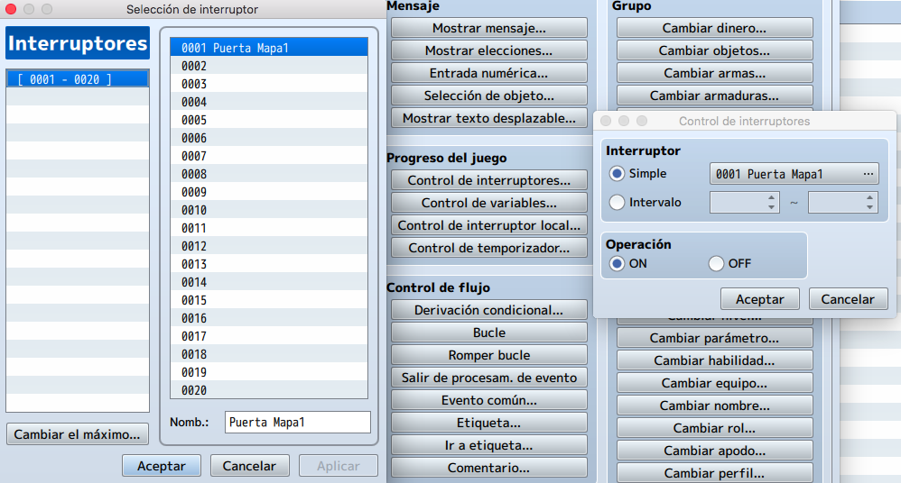
La pantalla del evento quedaría de esta forma
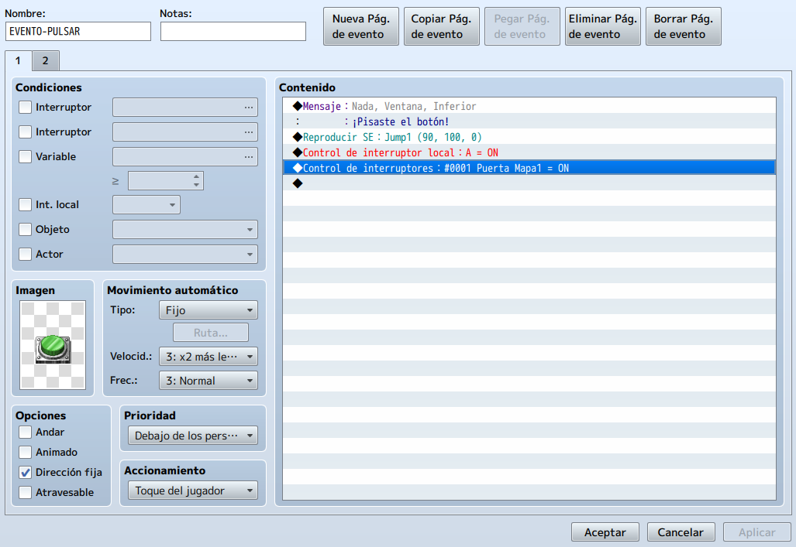
Una vez terminada esta página, añadiremos una nueva página al evento y en las condiciones, marcaremos el interruptor local A y cambiaremos la imagen a la del botón pulsado.
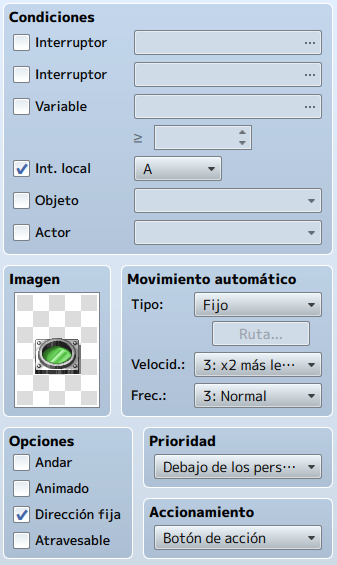
Ahora crearemos en la cueva otro evento. En este caso, tendrá 3 páginas.
En la primera, pondremos la imagen de la verja cerrada y las siguientes caracteristicas para que aparezca la
verja cerrada.
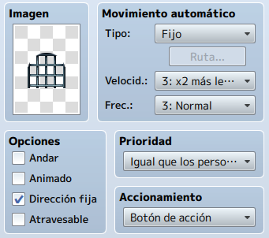
En la segunda página, seguiremos poniendo la imagen de la verja cerrada y en este caso, en el accionamiento
seleccionaremos la opción Proceso paralelo para que esté ejecutándose continuamente.
Añadiremos la condición de que esta página se active cuando esté activo el interruptor "0001 Puerta Mapa1"
(se activa cuando pisamos el botón).
También podemos añadir un efecto de sonido y aquí también activaremos un interruptor local para poder ejecutar
la terera página. El interruptor activado será el "A", que al ser local al evento, no tiene nada que ver con
el interruptor del mismo nombre que se activa en el botón.
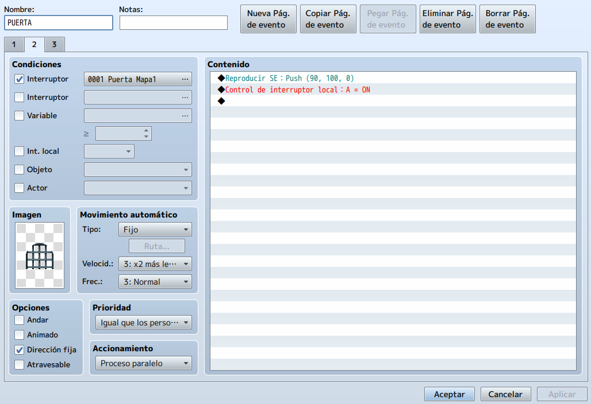
La tercera página la crearemos para poner el efecto de la verja levantada y transferir a nuestro personaje al
siguiente mapa.
Para transferir al jugador a otro mapa, crearemos un nuevo contenido de tipo transportar al
jugador de la segunda pestaña.
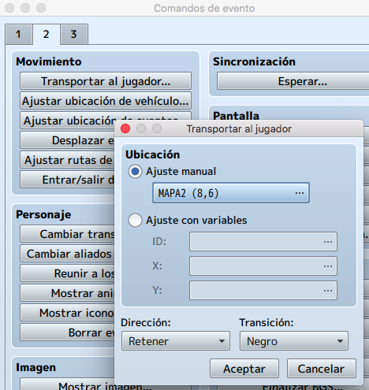
La tercera página quedaría:
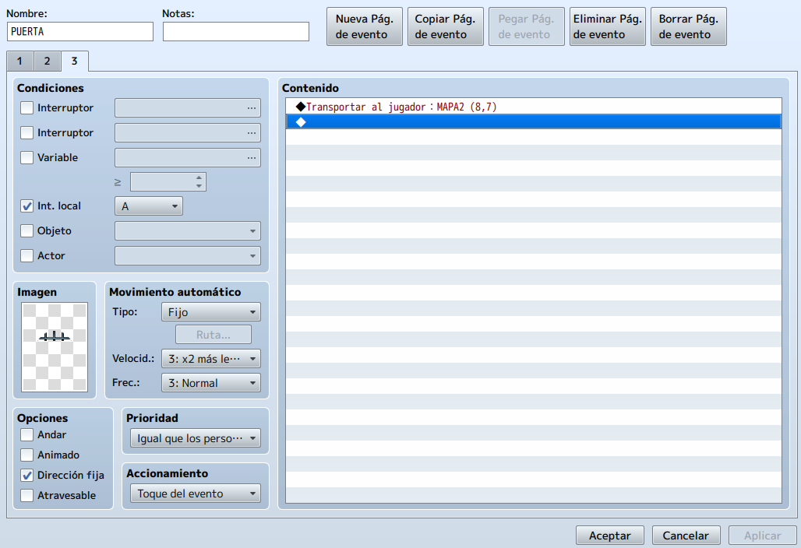
Probaremos el resultado final...
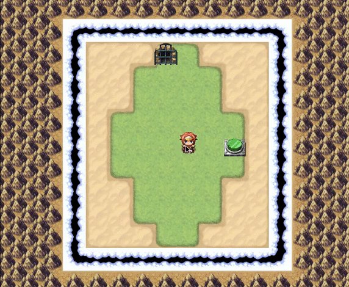
Aprendido esto, ya podemos crear cualquier tipo de evento que dependa de otro.